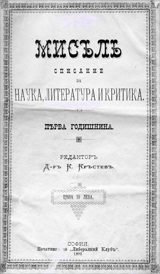

Културната програма на кръга Мисъл съдържа ново разбиране за ролята на изкуството като основен фактор за култивиране и одухотворяване на личността. Социалната роля на изкуството не се отрича, но за доминираща се провъзгласява чисто художествената му функция. Затова модернистите са убедени, че само високо художествената творба може да осъществи и социална функция, да въздейства благоприятно на обществото. В списание Мисъл често се пише, че изкуството може да изпълнява обществените си задачи главно чрез своята художественост.
„Мисъл“ е българско списание, издавано в периода 1892 и 1907 г.
Около списание „Мисъл“, дълго след като то се е утвърдило, възниква така нареченият кръг „Мисъл“. Кръгът „Мисъл“, наречен по името на списанието, включва 4 творци – д-р Кръстев, П. П. Славейков, П. Ю. Тодоров и П. К. Яворов. Внася новите насоки на индивидуализма и естетизма в българската литература. Тематиката на творбите е философска и психологическа, на преден план е изведена личността. Славейков мечтае за литература, която възпява „човека в българина“ – като противовес на Вазовата традиция до този момент, която възпява българина.
